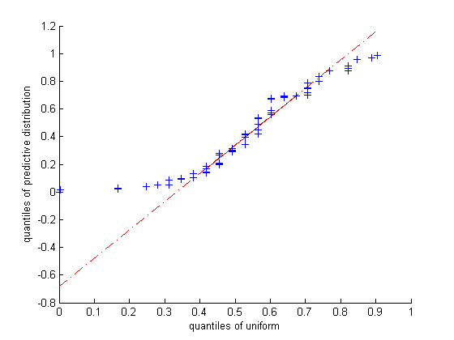
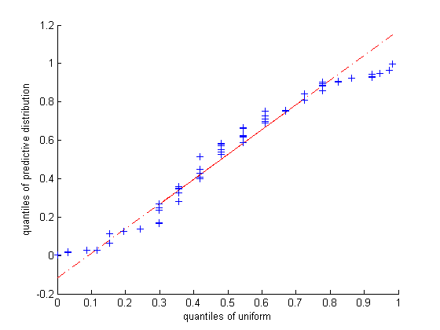

function newcombPostPred()
setSeed(1);
D = [28 26 33 24 34 -44 27 16 40 -2 29 22 24 21 25 30 23 29 31 19 ...
24 20 36 32 36 28 25 21 28 29 37 25 28 26 30 32 36 26 30 22 ...
36 23 27 27 28 27 31 27 26 33 26 32 32 24 39 28 24 25 32 25 ...
29 27 28 29 16 23];
doPlot(D)
printPmtkFigure('newcombPostPredOutlier');
D(6) = [];
doPlot(D)
printPmtkFigure('newcombPostPred');
end
function doPlot(D)
n = length(D);
for i=1:n
ndx = setdiff(1:n, i);
mu = mean(D(ndx)); sigma = std(D(ndx));
pred(i) = normcdf(D(i), mu, sigma);
end
unif = rand(n,1);
figure;
qqplot(pred, unif);
xlabel('quantiles of uniform')
ylabel('quantiles of predictive distribution')
end
 